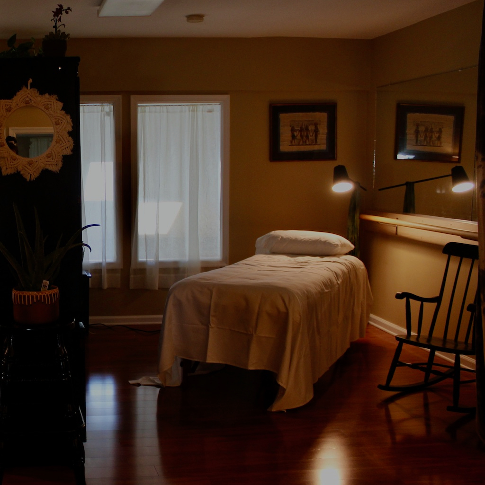
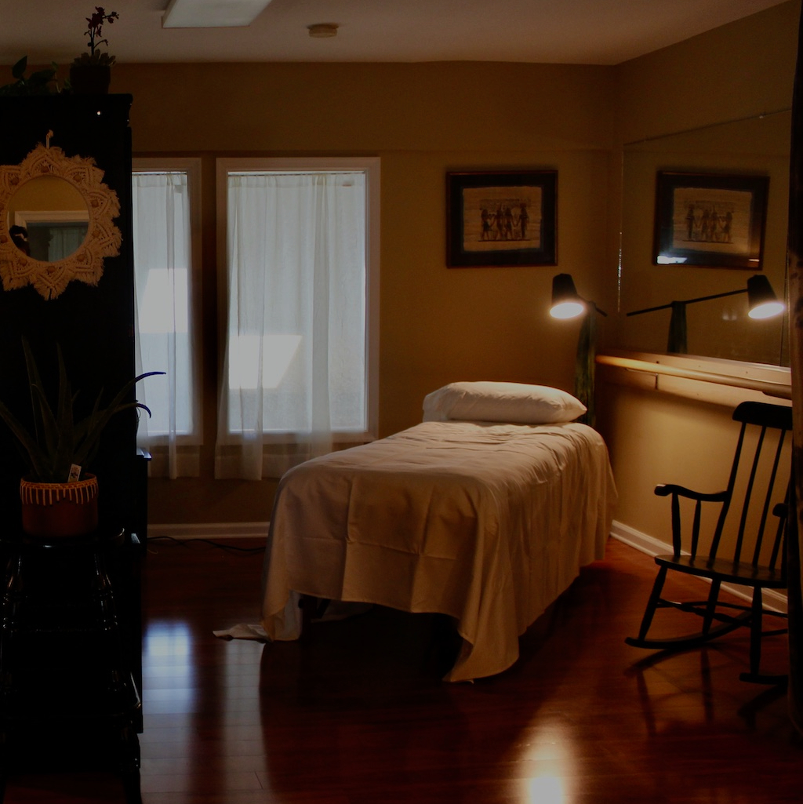

Accessible, Approachable, Effective
 

Jamie Hofmann L.Ac and Dana Reilley L.Ac serving up acupuncture in Yardley, PA! We specialize in Orthopedic and Physical Acupuncture (for the Body) and Five-Element Acupuncture (for the Mind and Spirit!) Our new practice is seriously cozy and conveniently located off 95. We love to share the magic of acupuncture in an approachable and effective way.
LBA is here for you, call us or book online.
Jamie Hofmann specializes in treating myofascial pain and cosmetic acupuncture. With a bachelor's degree from Temple University and a masters degree in acupuncture from the Won Institute, Jamie is a current board certified PA acupuncturist, currently training in the F A C E program at Pacific College.
Dana Reilley practices five element acupuncture, a tradition that focuses on the mind, the spirit and the body. She has a bachelor's degree from University of South Carolina and a masters in acupuncture from the Won Institute. As a board certified PA acupuncturist, Dana Reilley is currently studying under Thea Elijah whole heart connection practices.